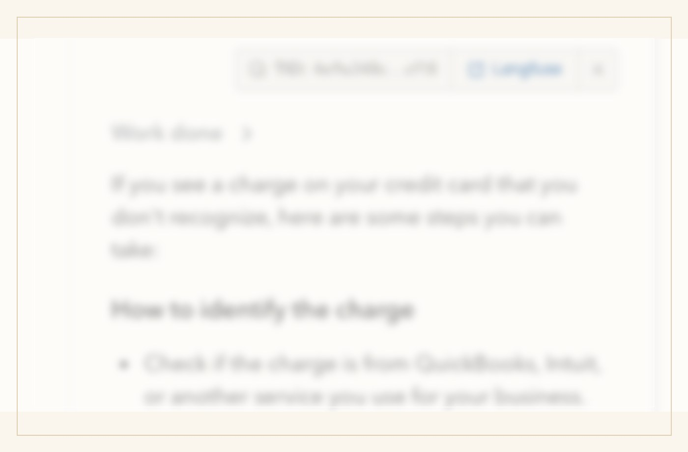

Redacted product artifactFlagship · builder proof · AI product
Built the agent skill that explains QuickBooks subscription charges.
I moved the target state from concept to working build: skill spec, read-only lookup tool, mock/eval/dev modes, and a 108-case eval set. Built solo, AI-paired, in five days.
- Owned
- Skill behavior, tool contract, eval design, API blocker handling.
- Proof
- Working prototype, read-only lookup, and 108-case eval gate.